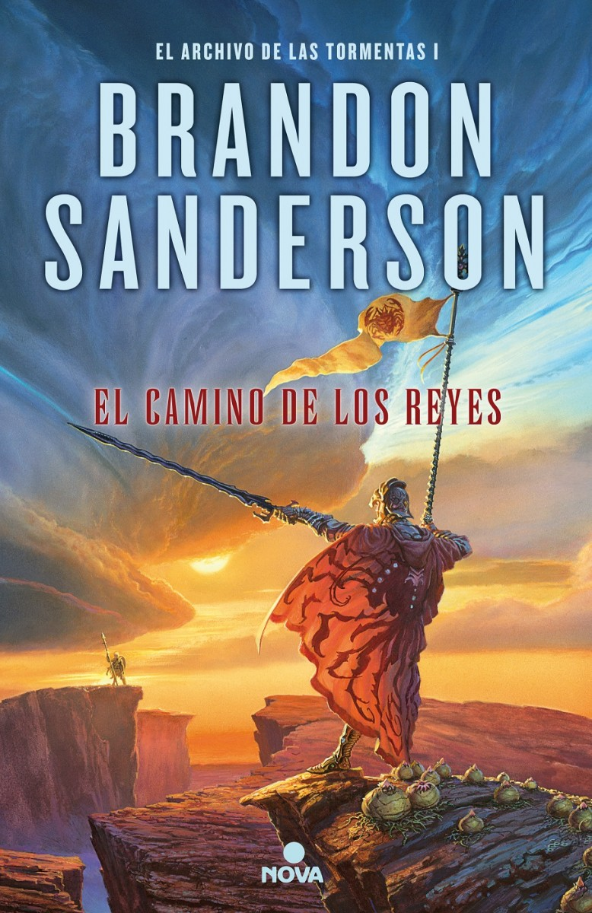

El rincón de los libros
“Cada libro, cada tomo que ves, tiene alma. El alma de quien lo escribió, y el alma de quienes lo leyeron y vivieron y soñaron con él.” - La sombra del viento
Literatura Fantastica
Cronicas del asesino de reyes
Autor: Patrick Rothfuss
"He robado princesas a reyes agónicos. Incendié la ciudad de Trebon. He pasado la noche con Felurian y he despertado vivo y cuerdo. Me expulsaron de la Universidad a una edad a la que a la mayoría todavía no los dejan entrar. He recorrido de noche caminos de los que otros no se atreven a hablar ni siquiera de día. He hablado con dioses, he amado a mujeres y he escrito canciones que hacen llorar a los bardos. Quizá hayas oído hablar de mí." El nombre del viento
Universo Del Cosmere
Autor: Brandon Sanderson
"Y, por tanto, ¿importa el destino? ¿O es el camino que emprendemos? Declaro que ningún logro tiene tan gran sustancia como el camino empleado para conseguirlo. No somos criaturas de destinos. Es el viaje el que nos da la forma. Nuestros pies encallecidos, nuestras espaldas fortalecidas por cargar el peso de nuestros viajes, nuestros ojos abiertos con el fresco deleite de las experiencias vividas." El camino de los reyes
La rueda del tiempo
Autor: Robert Jordan
"La Rueda del Tiempo gira y las eras pasan y dejan tras de sí recuerdos que se convierten en leyenda. La leyenda se difumina, deviene en mito, e incluso el mito se ha olvidado mucho antes de que la era que lo vio nacer retorne de nuevo. En una era llamada la tercera por algunos, una era que ja de venir, una era transcurrida hace mucho, comenzó a soplar un viento..." El ojo del mundo